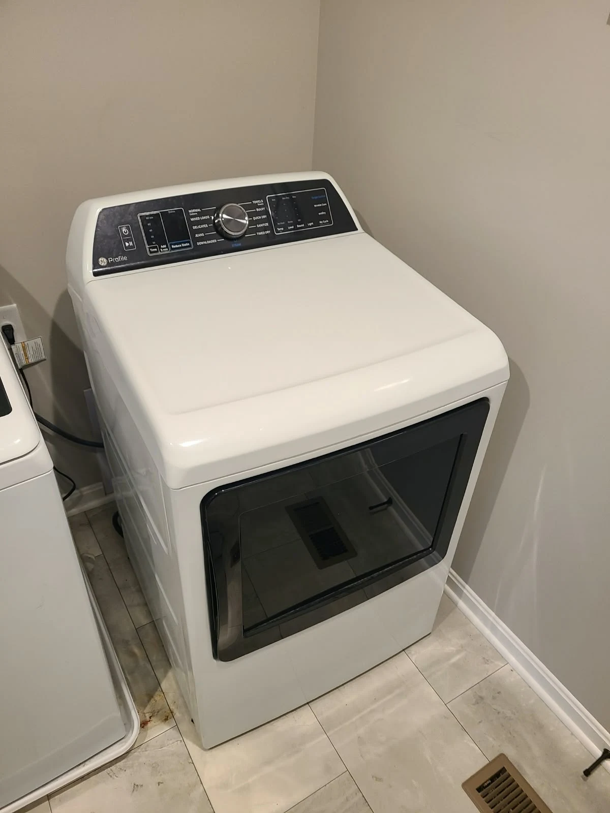
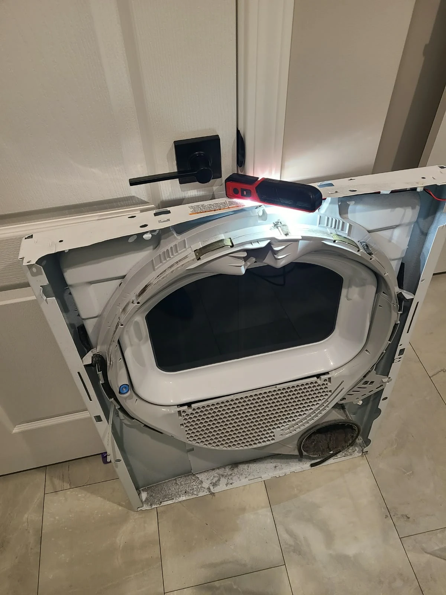
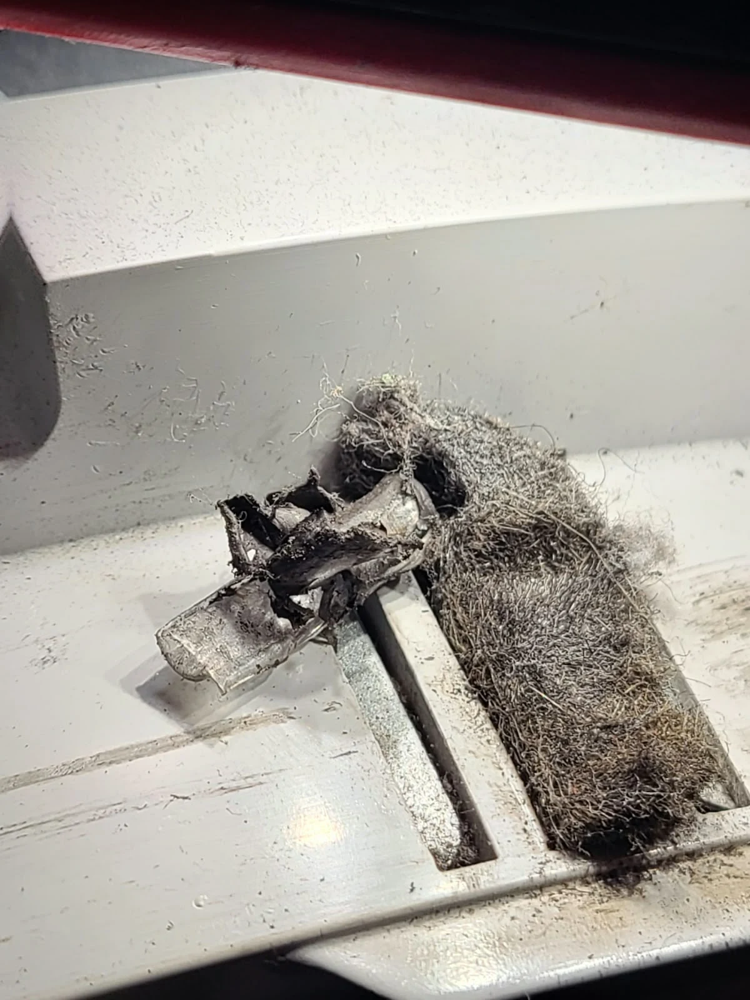
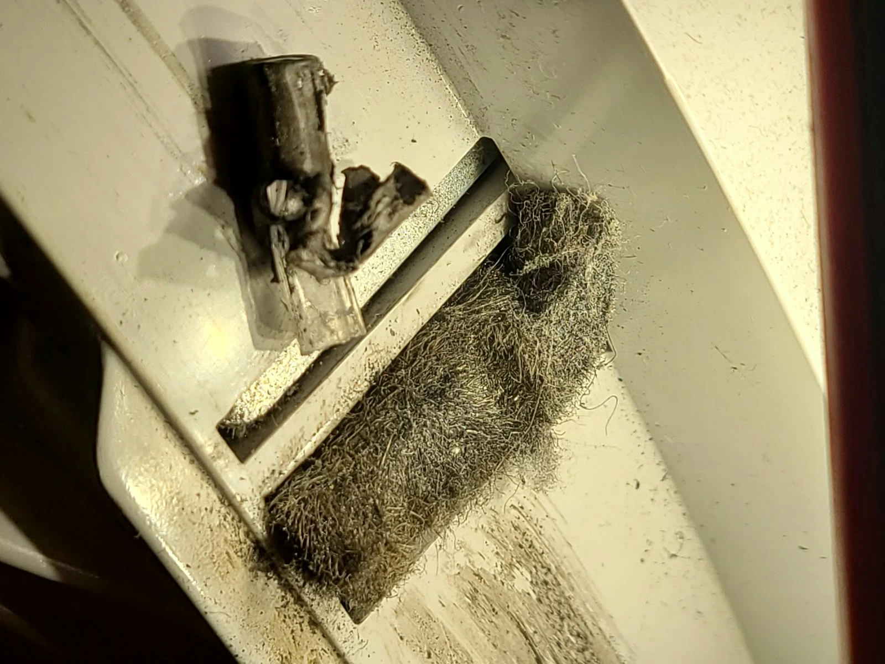
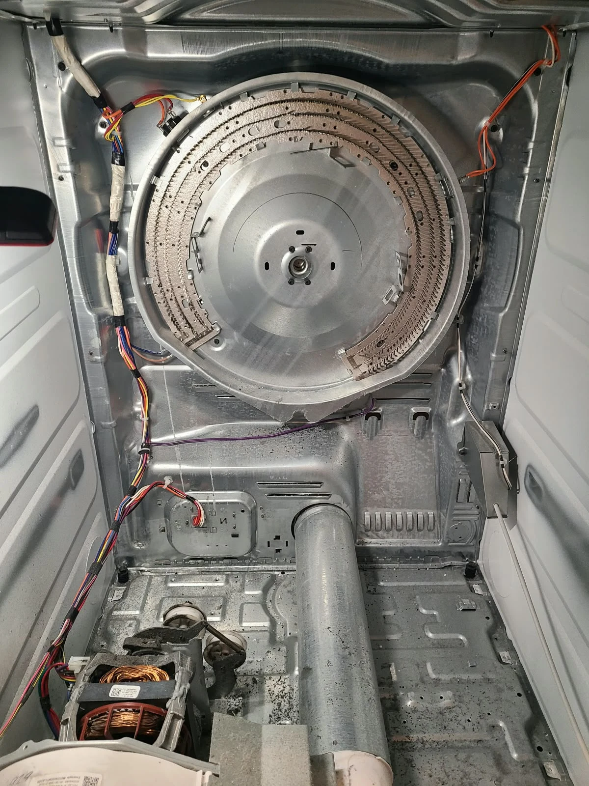
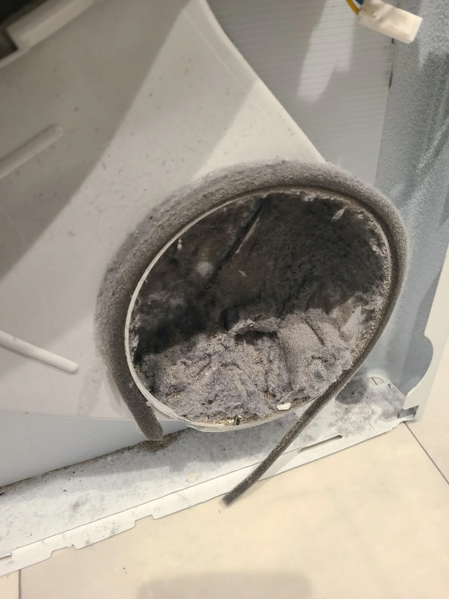
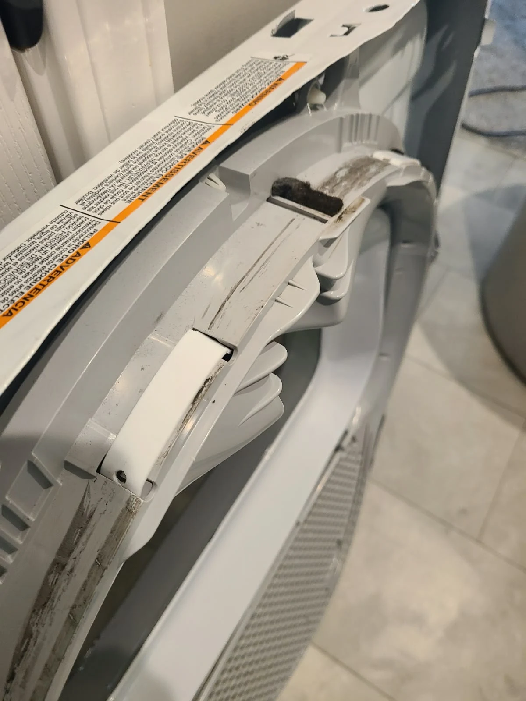
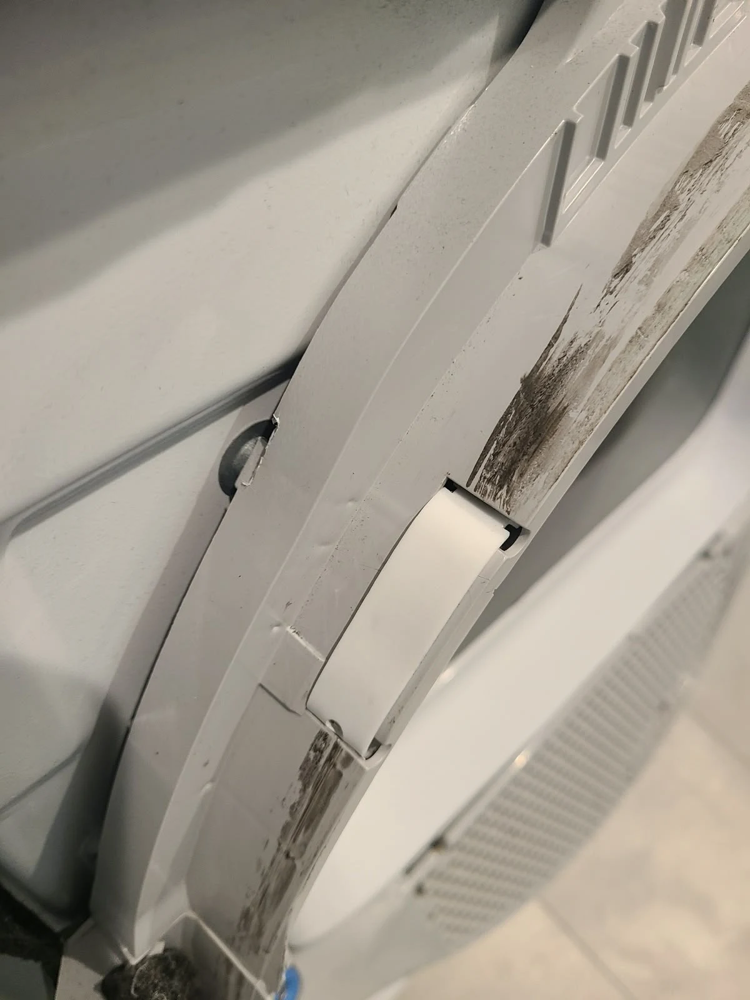
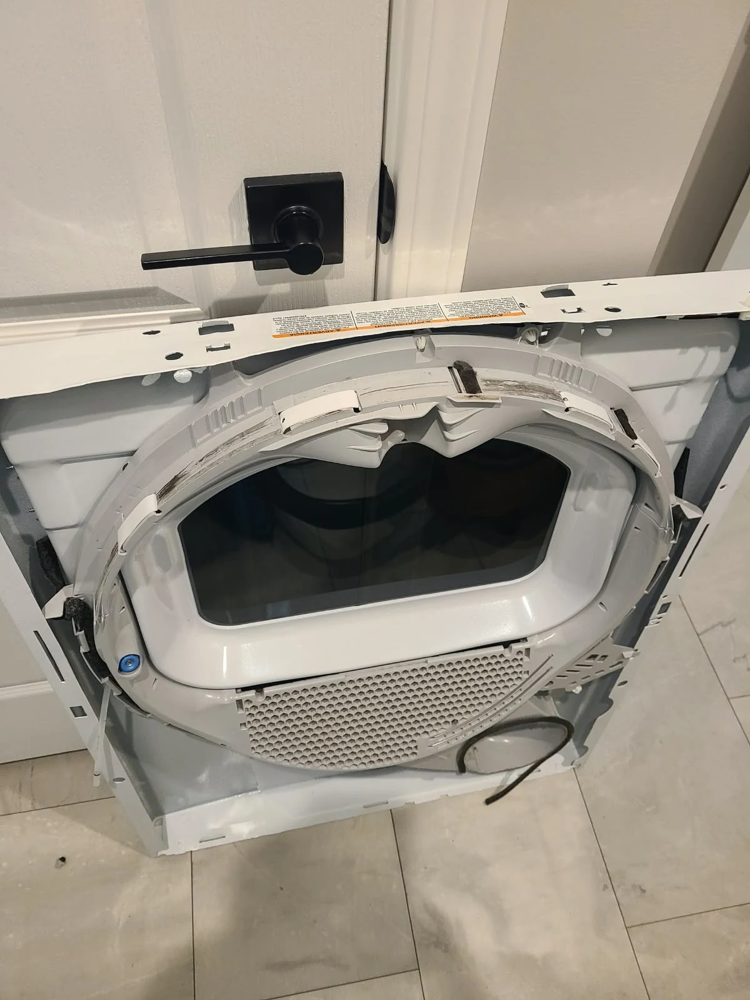
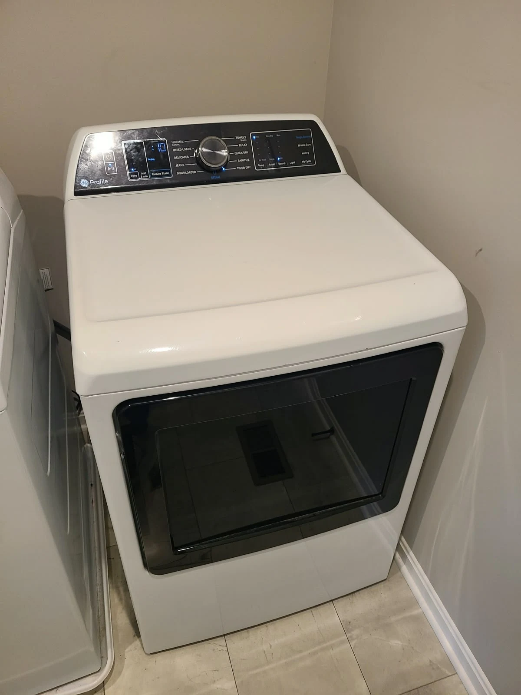

A Squeaking GE Profile Dryer
A homeowner in Westfield, Indiana, reported a squeaking GE Profile dryer. The repair involved the drum bearing slides, the small contact surfaces fitted to the front drum support. The work also included removing a shoelace tip and cleaning accumulated lint and debris inside the appliance.
We replaced the slides, completed the cleaning and reassembled the dryer before testing it. The final test was successful. The original service photographs below document the appliance, access to the front support, the internal buildup and the replacement slides. This article follows the work completed on this particular dryer.
Confirming the Dryer Model
The appliance label identifies this dryer as GE Profile PTD70EBST1WS. The cropped photograph preserves the original model lettering so the identification can be read alongside the repair details.
The supplied exploded diagram in the visit overview shows the front-panel assembly and highlights the drum slides. It provides a reference for their position on the curved support. The diagram is separate from the service photographs; its numbered callouts identify positions in the illustration.

Opening the Front Drum Support
The front panel was removed to reach the drum support and the areas behind it. With the dryer opened, the slide mounting locations and the lint deposits were accessible for service. The photograph shows the inside face of the front assembly during that work.
The repair addressed the drum bearing slides rather than treating the squeak as a diagnosis by itself. A similar sound in another dryer can require different work. For this GE Profile, slide replacement, removal of the foreign object and internal cleaning were the confirmed steps before reassembly.
Removing the Shoelace Tip and Cleaning the Interior
A shoelace tip was removed during the repair. We also cleaned accumulated lint and debris from the accessible interior. The photographs show the buildup around the front assembly before cleaning, including deposits that would not be reached by simply emptying the lint screen.


The foreign-object removal and cleaning were completed alongside the slide replacement. These details are part of the same service visit: the work addressed both the drum contact surfaces and the material found inside the opened dryer.
Access Inside the Dryer
Removing the drum exposed the cabinet interior. The second photograph shows lint in an air opening during inspection. These views help explain why internal cleaning was included in the repair and show the areas accessible while the appliance was disassembled.


The cleaning described here was performed inside the dryer as part of this repair. After the work, the removed assemblies were returned to their operating positions for the final test.
Replacing the Drum Bearing Slides
The replacement drum bearing slides were fitted to the front support. The wider photograph shows their positions around the curved assembly; the close-up shows a new slide seated in its mounting location. These are original photographs from the repair.


The slides provide contact surfaces at the front of the rotating drum. The supplied diagram makes their location easier to compare with the actual assembly. The repair documented here was replacement of the slides, followed by reassembly and testing.

Reassembling the Front Assembly
After the slide replacement, shoelace tip removal and cleaning, the front assembly was prepared for reassembly. The photograph records this stage of the work, with the drum-support area visible before the dryer was closed.
Cleaning and component replacement were completed before the operating check. That sequence allowed the final test to evaluate the reassembled appliance after all of the reported repair steps had been performed.

Successful Testing After Repair
The dryer was reassembled and successfully tested after the repair. This completed the Westfield service visit for the original squeaking complaint.
The finished-appliance photograph shows the GE Profile back together. The confirmed work was drum bearing slide replacement, removal of a shoelace tip and internal cleaning. The successful operating test was the final step before the repair was considered complete.
Questions About This Dryer Repair
What was replaced?
The drum bearing slides on this GE Profile PTD70EBST1WS were replaced.
Was anything found inside the dryer?
A shoelace tip was removed, and accumulated lint and debris were cleaned from the interior during service.
Was the dryer tested afterward?
Yes. Testing after reassembly was successful.
Does every squeaking dryer need new slides?
No. This repair applies to the diagnosed appliance in this story. A different dryer or noise source requires its own inspection.
Dryer Repair in Westfield, Indiana
For a dryer that squeaks or makes an unfamiliar noise, share the model number and describe when the sound occurs. Explore our dryer repair service in Westfield and more repair stories with original photographs.
Alex Appliance Repair is an independent appliance repair service operated by Aksenov LLC. Call (463) 248-8429 to discuss your dryer problem.
Book dryer repair